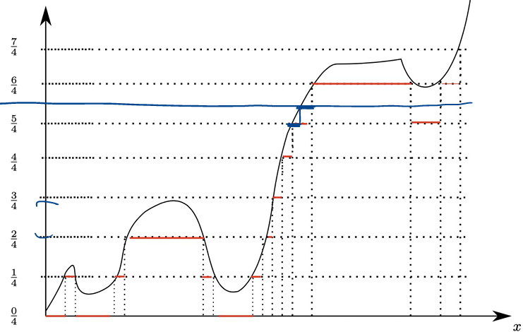

15 Lecture 7.1: Robustness and Measurability
15.1 Robustness of Measurability
15.2 Continuous and Discontinuous Transformations
We showed previously that if \(f: \mathbb{R}^d \to \mathbb{R}\) is \((\mathcal{B}(\mathbb{R}^d) / \mathcal{B}(\mathbb{R}))\)-measurable and \(X_1, \dots, X_d\) are \((\mathcal{F}/\mathcal{B}(\mathbb{R}))\)-measurable random variables on \((\Omega, \mathcal{F}, \mathbb{P})\), then \(Y = f(X_1, \dots, X_d)\) is \((\mathcal{F}/\mathcal{B}(\mathbb{R}))\)-measurable.
This property applies in particular to continuous functions \(f: \mathbb{R}^d \to \mathbb{R}\).
Example 15.1 (Continuous Transformations: Maximum, Minimum, and Absolute Value) The maps \((x, y) \mapsto \max(x, y) = x \vee y=\frac{x+y+|x-y|}{2}\) and \((x, y) \mapsto \min(x, y) = x \wedge y=\frac{x+y-|x-y|}{2}\) are continuous on \(\mathbb{R}^2\) and thus Borel measurable.
For any real random variable \(X\), we define its positive and negative parts by: \[ X_+ := \max(X, 0) = X \vee 0, \quad X_- := -\min(X, 0) = (-X) \vee 0. \] Then
- \(X_+\) and \(X_-\) are measurable random variables.
- Consequently, \(X = X_+ - X_-\) and \(|X| = X_+ + X_-\) are measurable, and
- \(X\) is measurable if and only if both \(X_+\) and \(X_-\) are measurable.
The general result for \((\mathcal{B}(\mathbb{R}^d)/\mathcal{B}(\mathbb{R}))\)-measurable maps is also useful when dealing with discontinuous functions of random variables.
Example 15.2 (The Generalized Reciprocal Map) For any fixed parameter \(\alpha \in \mathbb{R}\), define the modified inversion function \(i_\alpha: \mathbb{R} \to \mathbb{R}\) by: \[ i_\alpha(x) := \begin{cases} \frac{1}{x} & \text{if } x \neq 0, \\ \alpha & \text{if } x = 0. \end{cases} \]
To verify that \(i_\alpha\) is \((\mathcal{B}(\mathbb{R})/\mathcal{B}(\mathbb{R}))\)-measurable, consider first \(\alpha = 0\). For any \(x > 0\): \[ i_0^{-1}((x, \infty)) = \left(0, \frac{1}{x}\right) \in \mathcal{B}(\mathbb{R}), \] and for any \(x < 0\): \[ i_0^{-1}((x, \infty)) = [0, \infty) \cup \left(-\infty, \frac{1}{x}\right) \in \mathcal{B}(\mathbb{R}). \] Thus \(i_0\) is Borel measurable. In general, for any \(\alpha \in \mathbb{R}\), we can decompose \(i_\alpha\) as: \[ i_\alpha(x) = i_0(x) \mathbf{1}_{\mathbb{R} \setminus \{0\}}(x) + \alpha \mathbf{1}_{\{0\}}(x), \] which is a sum and product of Borel measurable functions and is therefore Borel measurable.
Consequently, if \(f: \Omega \to \mathbb{R}\) is \((\mathcal{F}/\mathcal{B}(\mathbb{R}))\)-measurable, then the function \((i_\alpha \circ f): \Omega \to \mathbb{R}\) given by: \[ (i_\alpha \circ f)(\omega) = \begin{cases} \frac{1}{f(\omega)} & \text{if } f(\omega) \neq 0, \\ \alpha & \text{if } f(\omega) = 0 \end{cases} \] is also \((\mathcal{F}/\mathcal{B}(\mathbb{R}))\)-measurable.
15.3 Measurability Under Pointwise Limits
Let \(\overline{\mathbb{R}} = [-\infty, \infty]\) denote the extended real numbers equipped with its Borel \(\sigma\)-algebra \(\mathcal{B}(\overline{\mathbb{R}})\).
Proposition 15.1 (Measurability of Limits and Extrema) Let \(f_n: (\Omega, \mathcal{F}) \to (\overline{\mathbb{R}}, \mathcal{B}(\overline{\mathbb{R}}))\) be a sequence of measurable functions for \(n \in \mathbb{N}\). Then the following functions are also \((\mathcal{F}/\mathcal{B}(\overline{\mathbb{R}}))\)-measurable: \[ \sup_{n \ge 1} f_n, \quad \inf_{n \ge 1} f_n, \quad \limsup_{n \to \infty} f_n, \quad \liminf_{n \to \infty} f_n. \] (Note: An analogous closure property under pointwise limits is false in general for continuous functions \(C(\mathbb{R})\).)
Proof (Proof of Proposition 15.1). We evaluate the preimages under generators of \(\mathcal{B}(\overline{\mathbb{R}})\):
Supremum: For any \(t \in \mathbb{R}\): \[ \begin{align*} \left( \sup_{n \ge 1} f_n \right)^{-1}([-\infty, t]) &= \left\{ \omega \in \Omega : \sup_{n \ge 1} f_n(\omega) \le t \right\} \\ &= \left\{ \omega \in \Omega : f_n(\omega) \le t \text{ for all } n \ge 1 \right\}. \end{align*} \] This yields the countable intersection: \[ \bigcap_{n=1}^\infty \{ \omega \in \Omega : f_n(\omega) \le t \} = \bigcap_{n=1}^\infty f_n^{-1}([-\infty, t]) \in \mathcal{F}. \]
Infimum: Using \(\inf_{n} f_n = -\sup_{n} (-f_n)\) (or directly observing \(\{ \inf_n f_n \ge t \} = \bigcap_n \{ f_n \ge t \}\)), \(\inf_n f_n\) is measurable.
Limit Superior and Inferior: By definition of limit superior and limit inferior: \[ \limsup_{n \to \infty} f_n = \inf_{n \ge 1} \left( \sup_{j \ge n} f_j \right), \quad \liminf_{n \to \infty} f_n = \sup_{n \ge 1} \left( \inf_{j \ge n} f_j \right). \] Since \(g_n = \sup_{j \ge n} f_j\) is measurable for each \(n\), its infimum \(\inf_{n \ge 1} g_n = \limsup_{n \to \infty} f_n\) is measurable. Similarly, \(\liminf_{n \to \infty} f_n\) is measurable.
If \(f(\omega) = \lim_{n \to \infty} f_n(\omega)\) exists pointwise, then \(f = \limsup_{n \to \infty} f_n = \liminf_{n \to \infty} f_n\), so \(f\) is measurable.
15.4 Simple Functions and Approximations
Definition 15.1 (Simple Function) A function \(\varphi: \Omega \to \mathbb{R}\) is called a simple function if its range \(\varphi(\Omega) \subseteq \mathbb{R}\) is a finite set.
Example 15.3 (Canonical Representation of Simple Functions) Let \(\varphi(\Omega) = \{\alpha_1, \alpha_2, \dots, \alpha_n\}\) be the distinct values taken by \(\varphi\). Define \(A_j := \varphi^{-1}(\{\alpha_j\}) \subseteq \Omega\) for \(j = 1, \dots, n\).
The sets \(A_1, \dots, A_n\) form a finite partition of \(\Omega\) (i.e., they are pairwise disjoint and \(\bigcup_{j=1}^n A_j = \Omega\)). The function \(\varphi\) can be written uniquely in canonical form as: \[ \varphi(\omega) = \sum_{j=1}^n \alpha_j \mathbf{1}_{A_j}(\omega). \] Special case: For a single indicator function \(\varphi = \alpha \mathbf{1}_A\), \(\varphi\) is \((\mathcal{F}/\mathcal{B}(\mathbb{R}))\)-measurable if and only if \(A \in \mathcal{F}\).
Lemma 15.1 (Measurability Criterion for Simple Functions) A simple function \(\varphi = \sum_{j=1}^n \alpha_j \mathbf{1}_{A_j}\) with distinct non-zero values \(\{\alpha_j\}_{j=1}^n\) is \((\mathcal{F}/\mathcal{B}(\mathbb{R}))\)-measurable if and only if \(A_j = \varphi^{-1}(\{\alpha_j\}) \in \mathcal{F}\) for every \(j = 1, \dots, n\).
15.5 Simple Approximation Theorem
Theorem 15.1 (Simple Approximation Theorem) If \(f: (\Omega, \mathcal{F}) \to (\mathbb{R}, \mathcal{B}(\mathbb{R}))\) is measurable, then there exists a sequence of simple measurable functions \(\{\varphi_n\}_{n=1}^\infty\) such that: \[ \lim_{n \to \infty} \varphi_n(\omega) = f(\omega) \quad \text{for all } \omega \in \Omega. \] Moreover:
- If \(f \ge 0\), the sequence can be chosen to be non-decreasing (\(0 \le \varphi_1 \le \varphi_2 \le \dots \le f\)).
- If \(f\) is bounded on \(M \subseteq \Omega\), then \(\varphi_n \to f\) uniformly on \(M\).

Proof (Proof of Theorem 15.1). It suffices to prove the result for \(f \ge 0\); for a general real-valued function \(f\), we apply the construction separately to \(f_+\) and \(f_-\), setting \(\varphi_n = \varphi_n^+ - \varphi_n^-\).
Assume \(f \ge 0\). For each \(n \in \mathbb{N}\), partition \([0, 2^n]\) into \(2^{2n}\) dyadic intervals of length \(2^{-n}\), and define: \[ \varphi_n(\omega) := \sum_{k=0}^{2^{2n}-1} \frac{k}{2^n} \mathbf{1}_{\left\{ \frac{k}{2^n} < f \le \frac{k+1}{2^n} \right\}}(\omega) + 2^n \mathbf{1}_{\{f > 2^n\}}(\omega). \] Equivalently, \[ \varphi_n(\omega) = \begin{cases} \frac{k}{2^n} & \text{if } \frac{k}{2^n} < f(\omega) \le \frac{k+1}{2^n}, \quad k = 0, 1, \dots, 2^{2n}-1, \\ 2^n & \text{if } f(\omega) > 2^n. \end{cases} \] Thus \(\varphi_n\) is essentially obtained by rounding \(f\) down to the nearest multiple of \(2^{-n}\), while truncating values above \(2^n\). The function \(\varphi_n\) takes only finitely many values: \[ 0, 2^{-n}, 2 \cdot 2^{-n}, \dots, (2^{2n}-1) \cdot 2^{-n}, 2^n. \]
- Measurability: Each set \(\left\{ \omega \in \Omega : \frac{k}{2^n} < f(\omega) \le \frac{k+1}{2^n} \right\} = f^{-1}\left( \left(\frac{k}{2^n}, \frac{k+1}{2^n}\right] \right) \in \mathcal{F}\) and \(\{f > 2^n\} = f^{-1}((2^n, \infty)) \in \mathcal{F}\) by measurability of \(f\). Thus \(\varphi_n\) is a simple measurable function.
- Monotonicity: By construction, refining from \(n\) to \(n+1\) splits each interval of length \(2^{-n}\) into two sub-intervals of length \(2^{-(n+1)}\), yielding \(\varphi_n \le \varphi_{n+1} \le f\).
- Convergence: For any \(\omega \in \Omega\), choose \(N \in \mathbb{N}\) large enough such that \(f(\omega) \le 2^N\). Then for all \(n \ge N\): \[ 0 \le f(\omega) - \varphi_n(\omega) \le 2^{-n}. \] Taking \(n \to \infty\) gives pointwise convergence \(\varphi_n(\omega) \to f(\omega)\). If \(f\) is bounded on \(M\), \(N\) can be chosen independently of \(\omega\), yielding uniform convergence on \(M\).
15.6 Factoring Random Variables (Doob–Dynkin Lemma)
15.7 Characterization of Generated \(\sigma\)-Algebras
Definition 15.2 (Generated \(\sigma\)-Algebra) The \(\sigma\)-algebra generated by a collection of random variables \(\{X_j\}_{j=1}^d\) is: \[ \sigma(X_1, \dots, X_d) := \sigma\left( \bigcup_{j=1}^d X_j^* \mathcal{B}(\mathbb{R}) \right) \subseteq \mathcal{F}. \] This is the smallest \(\sigma\)-algebra on \(\Omega\) with respect to which \(X_1, \dots, X_d\) are all measurable.
Equivalent and very useful characterizations:
\[ \begin{align*} \sigma(X_1, \dots, X_d) &= \sigma\left(\bigcup_{j=1}^d \{X^{-1}_j(B): B \in \mathcal{B}(\mathbb{R})\}\right)\\ &= \sigma\left(\{X^{-1}_j(B): B \in \mathcal{B}(\mathbb{R}), j = 1, \dots, d\}\right)\\ &=\sigma\left(\bigcup_{j=1}^d \{X^{-1}_j((-\infty, t]): t \in \mathbb{R}\}\right)\\ &=\sigma\left(\bigcup_{j=1}^d \{X_j \le t\}: t \in \mathbb{R}\right). \end{align*} \]
Let \(\mathbf{X} = (X_1, \dots, X_d)^T : \Omega \to \mathbb{R}^d\) be a random vector formed by \((\mathcal{F}/\mathcal{B}(\mathbb{R}))\)-measurable random variables \(X_1, \dots, X_d\).
Lemma 15.2 (Structure of \(\sigma(X_1, \dots, X_d)\)) Let \(\mathbf{X}: \Omega \to \mathbb{R}^d\) be defined by \(\mathbf{X}(\omega) = (X_1(\omega), \dots, X_d(\omega))^T\). Then: \[ \sigma(X_1, \dots, X_d) = \mathbf{X}^* \mathcal{B}(\mathbb{R}^d) = \{ \mathbf{X}^{-1}(B) \subseteq \Omega : B \in \mathcal{B}(\mathbb{R}^d) \}. \] This is the smallest \(\sigma\)-algebra on \(\Omega\) with respect to which \(X_1, \dots, X_d\) are measurable.
Proof (Proof of Lemma 15.2). To establish the equality \(\sigma(X_1, \dots, X_d) = \mathbf{X}^* \mathcal{B}(\mathbb{R}^d)\), we show inclusion in both directions.
15.7.1 Step 1: Proof that \(\sigma(X_1, \dots, X_d) \subseteq \mathbf{X}^* \mathcal{B}(\mathbb{R}^d)\)
Recall that the individual generated \(\sigma\)-algebra is defined as: \[ \sigma(X_1, \dots, X_d) = \sigma\left( \bigcup_{i=1}^d \{ X_i^{-1}(A) : A \in \mathcal{B}(\mathbb{R}) \} \right). \]
For each coordinate index \(i \in \{1, \dots, d\}\), consider the coordinate projection map \(\pi_i : \mathbb{R}^d \to \mathbb{R}\) defined by \(\pi_i(x_1, \dots, x_d) = x_i\).
- Measurability of \(\pi_i\): The projection map \(\pi_i\) is continuous under the standard Euclidean topology, which implies it is \((\mathcal{B}(\mathbb{R}^d)/\mathcal{B}(\mathbb{R}))\)-measurable.
- Composition: Notice that \(X_i = \pi_i \circ \mathbf{X}\). For any Borel set \(A \in \mathcal{B}(\mathbb{R})\), taking preimages gives: \[ X_i^{-1}(A) = (\pi_i \circ \mathbf{X})^{-1}(A) = \mathbf{X}^{-1}\left( \pi_i^{-1}(A) \right). \]
- Inclusion of Generators: Since \(\pi_i\) is measurable, \(\pi_i^{-1}(A) \in \mathcal{B}(\mathbb{R}^d)\). Thus, by definition of the pull-back \(\sigma\)-algebra: \[ X_i^{-1}(A) \in \mathbf{X}^* \mathcal{B}(\mathbb{R}^d) \quad \forall A \in \mathcal{B}(\mathbb{R}), \; \forall i \in \{1, \dots, d\}. \]
Because \(\mathbf{X}^* \mathcal{B}(\mathbb{R}^d)\) is a valid \(\sigma\)-algebra on \(\Omega\) that contains all generator sets of \(\sigma(X_1, \dots, X_d)\), the minimal property of generated \(\sigma\)-algebras implies: \[ \sigma(X_1, \dots, X_d) \subseteq \mathbf{X}^* \mathcal{B}(\mathbb{R}^d). \]
15.7.2 Step 2: Proof that \(\mathbf{X}^* \mathcal{B}(\mathbb{R}^d) \subseteq \sigma(X_1, \dots, X_d)\)
Consider the collection of open hyper-rectangles in \(\mathbb{R}^d\): \[ \mathcal{C} = \left\{ \prod_{i=1}^d (a_i, b_i) \subset \mathbb{R}^d : a_i, b_i \in \mathbb{R}, \; a_i < b_i \right\}. \] It is a standard result of measure theory that \(\mathcal{C}\) generates the \(d\)-dimensional Borel \(\sigma\)-algebra, i.e., \(\mathcal{B}(\mathbb{R}^d) = \sigma(\mathcal{C})\).
Preimages of Generators: Take any open rectangle \(I = \prod_{i=1}^d (a_i, b_i) \in \mathcal{C}\). Using the properties of preimages: \[ \begin{align*} \mathbf{X}^{-1}(I) &= \mathbf{X}^{-1}\left( \bigcap_{i=1}^d \pi_i^{-1}((a_i, b_i)) \right)\\ & = \bigcap_{i=1}^d \mathbf{X}^{-1}\left( \pi_i^{-1}((a_i, b_i)) \right)\\ & = \bigcap_{i=1}^d X_i^{-1}((a_i, b_i)). \end{align*} \] Since \(X_i^{-1}((a_i, b_i)) \in \sigma(X_i) \subseteq \sigma(X_1, \dots, X_d)\) for each \(i\), and \(\sigma\)-algebras are closed under finite intersections, we have: \[ \mathbf{X}^{-1}(I) \in \sigma(X_1, \dots, X_d) \quad \forall I \in \mathcal{C}. \]
Good Sets Argument: Define the collection of sets in \(\mathbb{R}^d\) whose preimage under \(\mathbf{X}\) is measurable with respect to \(\sigma(X_1, \dots, X_d)\): \[ \mathcal{M} = \left\{ B \in \mathcal{B}(\mathbb{R}^d) : \mathbf{X}^{-1}(B) \in \sigma(X_1, \dots, X_d) \right\}. \] We verify that \(\mathcal{M}\) forms a \(\sigma\)-algebra on \(\mathbb{R}^d\):
- Entire space: \(\mathbf{X}^{-1}(\mathbb{R}^d) = \Omega \in \sigma(X_1, \dots, X_d)\), so \(\mathbb{R}^d \in \mathcal{M}\).
- Complements: If \(B \in \mathcal{M}\), then \(\mathbf{X}^{-1}(B^c) = (\mathbf{X}^{-1}(B))^c \in \sigma(X_1, \dots, X_d)\) because \(\sigma\)-algebras are closed under complementation. Thus \(B^c \in \mathcal{M}\).
- Countable Unions: If \((B_n)_{n=1}^\infty \subseteq \mathcal{M}\), then \(\mathbf{X}^{-1}\left(\bigcup_{n=1}^\infty B_n\right) = \bigcup_{n=1}^\infty \mathbf{X}^{-1}(B_n) \in \sigma(X_1, \dots, X_d)\) by countable closure. Thus \(\bigcup_{n=1}^\infty B_n \in \mathcal{M}\).
Conclusion: Since \(\mathcal{M}\) is a \(\sigma\)-algebra on \(\mathbb{R}^d\) and contains \(\mathcal{C}\), it must contain the \(\sigma\)-algebra generated by \(\mathcal{C}\): \[ \mathcal{B}(\mathbb{R}^d) = \sigma(\mathcal{C}) \subseteq \mathcal{M}. \] By definition of \(\mathcal{M}\), this implies that for every \(B \in \mathcal{B}(\mathbb{R}^d)\), \(\mathbf{X}^{-1}(B) \in \sigma(X_1, \dots, X_d)\), which proves: \[ \mathbf{X}^* \mathcal{B}(\mathbb{R}^d) \subseteq \sigma(X_1, \dots, X_d). \]
Combining Step 1 and Step 2 yields \(\sigma(X_1, \dots, X_d) = \mathbf{X}^* \mathcal{B}(\mathbb{R}^d)\), completing the proof.
15.8 The Doob–Dynkin Representation Theorem
Theorem 15.2 (Doob–Dynkin Representation Theorem) Let \(X_1, \dots, X_d\) be \((\mathcal{F}/\mathcal{B}(\mathbb{R}))\)-measurable random variables, and let \(\mathbf{X} = (X_1, \dots, X_d): \Omega \to \mathbb{R}^d\).
A random variable \(Y: \Omega \to \mathbb{R}\) is \((\sigma(X_1, \dots, X_d) / \mathcal{B}(\mathbb{R}))\)-measurable if and only if there exists a Borel measurable function \(f: \mathbb{R}^d \to \mathbb{R}\) such that: \[ Y = f(X_1, \dots, X_d) = f \circ \mathbf{X}. \]
Proof (Proof of Theorem 15.2).
(\(\Leftarrow\)) Assume that \(Y = f \circ \mathbf{X}\) with \(f\) Borel measurable. Recall that \(\mathbf{X}\) is \(\mathcal{F}/\mathcal{B}(\mathbb{R}^d)\)-measurable. Indeed, since each \(X_j\) is measurable, the vector-valued map \(\mathbf{X}\) is measurable. Therefore, by composition of measurable functions, \(Y=f \circ \mathbf{X}\) is \(\mathcal{F}/\mathcal {B}(\mathbb{R})\)-measurable. More importantly, for every \(B\in\mathcal{B}(\mathbb{R})\), \[ Y^{-1}(B) = (f\circ\mathbf{X})^{-1}(B) = \mathbf{X}^{-1}\bigl(f^{-1}(B)\bigr). \] Since \(f\) is Borel measurable, \(f^{-1}(B)\in\mathcal{B}(\mathbb{R}^d)\). Hence \[ Y^{-1}(B) \in \{\mathbf{X}^{-1}(A): A \in \mathcal{B}(\mathbb{R}^d)\} = \sigma(\mathbf{X}). \] Thus \(Y:\bigl(\Omega,\sigma(\mathbf X)\bigr) \to \bigl(\mathbb R,\mathcal B(\mathbb R)\bigr)\) is measurable. Therefore, \(Y\) is \(\sigma(X_1,\ldots,X_d)/\mathcal{B}(\mathbb{R})\)-measurable.
(\(\Rightarrow\)) We prove existence of \(f\) via standard machine induction on the structure of \(Y\):
Step 1: Indicator Functions. Suppose \(Y = \mathbf{1}_A\) for some \(A \in \sigma(X_1, \dots, X_d)\). By Lemma 15.2, \(A = \mathbf{X}^{-1}(B)\) for some \(B \in \mathcal{B}(\mathbb{R}^d)\). Define \(f = \mathbf{1}_B: \mathbb{R}^d \to \mathbb{R}\), which is Borel measurable. Then: \[ f(\mathbf{X}(\omega)) = \mathbf{1}_B(\mathbf{X}(\omega)) = \mathbf{1}_{\mathbf{X}^{-1}(B)}(\omega) = \mathbf{1}_A(\omega) = Y(\omega). \] Therefore \(Y=f\circ\mathbf X\). Thus, the result holds for indicator functions.
Step 2: Simple Functions. Suppose \(Y = \sum_{j=1}^n \alpha_j \mathbf{1}_{A_j}\) is simple and \((\sigma(\mathbf{X})/\mathcal{B}(\mathbb{R}))\)-measurable. Then \(A_j \in \sigma(\mathbf{X})\) for each \(j\), so \(A_j = \mathbf{X}^{-1}(B_j)\) for some \(B_j \in \mathcal{B}(\mathbb{R}^d)\). Define \(f = \sum_{j=1}^n \alpha_j \mathbf{1}_{B_j}\), which is Borel measurable. Then: \[ f \circ \mathbf{X} = \sum_{j=1}^n \alpha_j \mathbf{1}_{B_j} \circ \mathbf{X} = \sum_{j=1}^n \alpha_j \mathbf{1}_{\mathbf{X}^{-1}(B_j)} = \sum_{j=1}^n \alpha_j \mathbf{1}_{A_j} = Y. \] Thus the result holds for simple measurable functions.
Step 3: General Measurable Functions. Let \(Y\) be an arbitrary \((\sigma(\mathbf{X})/\mathcal{B}(\mathbb{R}))\)-measurable random variable. By Theorem 15.1, there exists a sequence of simple \(\sigma(\mathbf{X})\)-measurable functions \(\{Y_n\}_{n=1}^\infty\) such that \(Y_n(\omega) \to Y(\omega)\) pointwise for all \(\omega \in \Omega\).
By Step 2, for each \(n \in \mathbb{N}\), there exists a Borel measurable function \(g_n: \mathbb{R}^d \to \mathbb{R}\) such that \(Y_n = g_n \circ \mathbf{X}\). Define \(f: \mathbb{R}^d \to \mathbb{R}\) by: \[ f(x) := \limsup_{n \to \infty} g_n(x). \] By Proposition 15.1, \(f\) is Borel measurable. Moreover, for every \(\omega \in \Omega\): \[ f(\mathbf{X}(\omega)) = \limsup_{n \to \infty} g_n(\mathbf{X}(\omega)) = \limsup_{n \to \infty} Y_n(\omega) = \lim_{n \to \infty} Y_n(\omega) = Y(\omega). \] Hence \(Y = f(\mathbf{X}) = f(X_1, \dots, X_d)\).